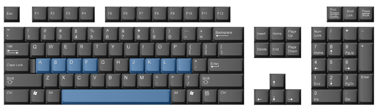
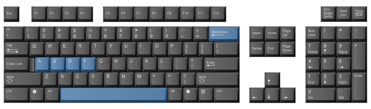

Project 1: Learning the Alphanumeric and Symbol Keys
How to Do It
Keystroking
Proper keystroking is very important. If you hold any of the keys down, the character you are typing repeats itself. That’s why the keys must be struck with a quick, sharp tap—just enough to cause the key to begin its movement. Don’t strike the keys too hard—it’s not necessary to use a great deal of force. The only way to learn how to strike the keys is through feel and practice.
Alpha Keys and Symbol Keys
Home Row

home row: eight keys (A, S, D, F, J, K, L, and ;) located in the centre row of the alphanumeric keypad; the base or home from which all other keys are reached
anchoring: keeping at least one finger touching or raised slightly above its position in home row so that the fingers do not lose their proper keyboarding position
alpha character: an alphabetical letter key on a keyboard
alphanumeric keypad: the keypad used for typing text; has keys for all of the letters of the alphabet and punctuation keys
The set of eight keys from which you will reach all the other keys on the alphanumeric keypad is called home row. The home row for the left hand comprises the A, S, D, and F keys. For the right hand, the home row comprises the J, K, L, and ; (semicolon) keys. You should keep at least one finger on, or hovering just above, the home row at all times so that on extended reaches you’ll be able to come back to home base and get the direction for other keys. This is known as anchoring.
Home row is the base from which all other keys are reached; for this reason you will learn these keys first. Home row consists of eight keys located on the second row of alpha characters on the alphanumeric keypad. Your left hand controls the A, S, D, and F keys; and your right hand controls the J, K, L, and ; (semicolon) keys.
The fingers used to strike the home-row keys take the names of the keys: A finger, S finger, D finger, F finger, J finger, K finger, L finger, and semi (short for the word semicolon) finger.
There is a small line or dot that is raised on either the D and K keys (Macintosh) or the F and J keys (all other keyboards). These marks allow you to feel the position of your fingers and know that they are on the correct keys without having to look at them.
Left-hand Home Row, Space Bar, and Backspace Key

You will first be introduced to the A, S, D, and F keys; the space bar; and the Backspace key. You should take some time to practise the reaches to these keys several times before you begin.

The space bar is struck with the thumb on the right hand. The left thumb is never used in keyboarding. You will need to keep either the ring finger (L finger) or the little finger (semi finger) of your right hand anchored as you reach to the space bar with your right thumb.

The Backspace key is struck with the little finger on the right hand. Make sure you keep your finger anchored on the J key while striking the backspace key.
It’s good to make a mental picture of your finger travelling from its home position to another key. At the same time, memorize the distance and the direction that your finger has to travel to strike each key.